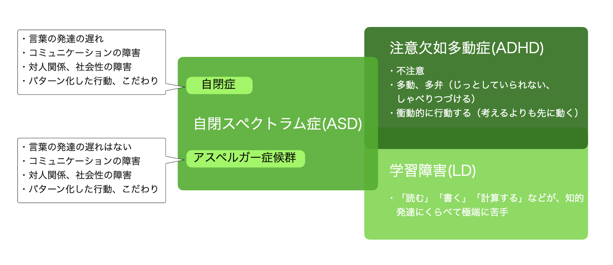

発達障害について
発達障害の分類
発達障害は、症状を大きくわけるとASD、ADHD、LDの三つにわけられます。これら三つの発達障害の特性は、複雑に重なり合って、症状が併発している場合が一般的です。
発達障害と脳
長年、発達障害の症状をもつ人の脳画像を研究してきた浜松医科大学精神医学講座の山末英智博士は、「発達障害は脳の発達の仕方が普通に脳が発達している人と比較すると、少し異なっているということです。そのため得意なところと不得意なところが普通に発達した人と比べて、極端に出てしまうことがあるのです」と語っています。
脳の発達のかたよりが、発達障害の特性をつくっているといえるでしょう。たとえば、発達障害の症状を抱えている人のなかには、見たものを一瞬で記憶するなど、脳のすぐれた機能があらわれる場合があります。しかし、その一方で一般の社会生活を送るうえで、必要な機能が十分でない場合もあるのです。
発達障害の診断方法
発達障害かどうかの診断は、次のようにおこなわれます。まず、専門の医療機関にて、本人や親への問診があります。そして、本人とのさまざまな場面での関わりを通したふるまいの観察とさまざまな検査がおこなわれます。そして、問診や観察、検査などから得られた情報をもとに、症状の組み合わせと症状の時間経過などのさまざまな条件によって診断されています。